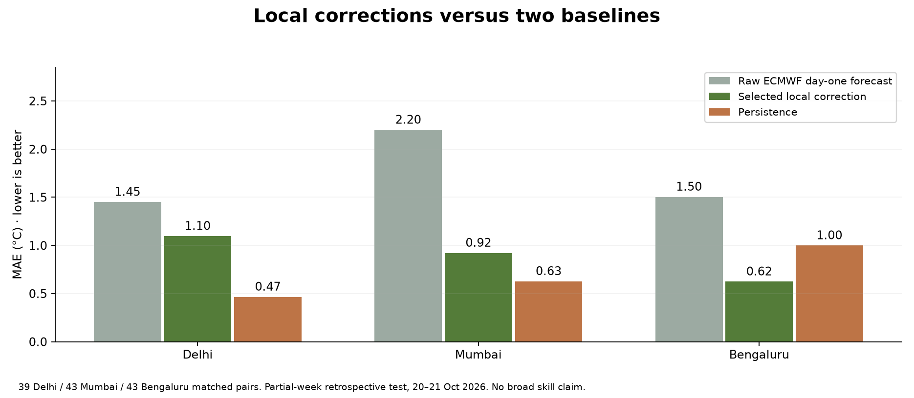
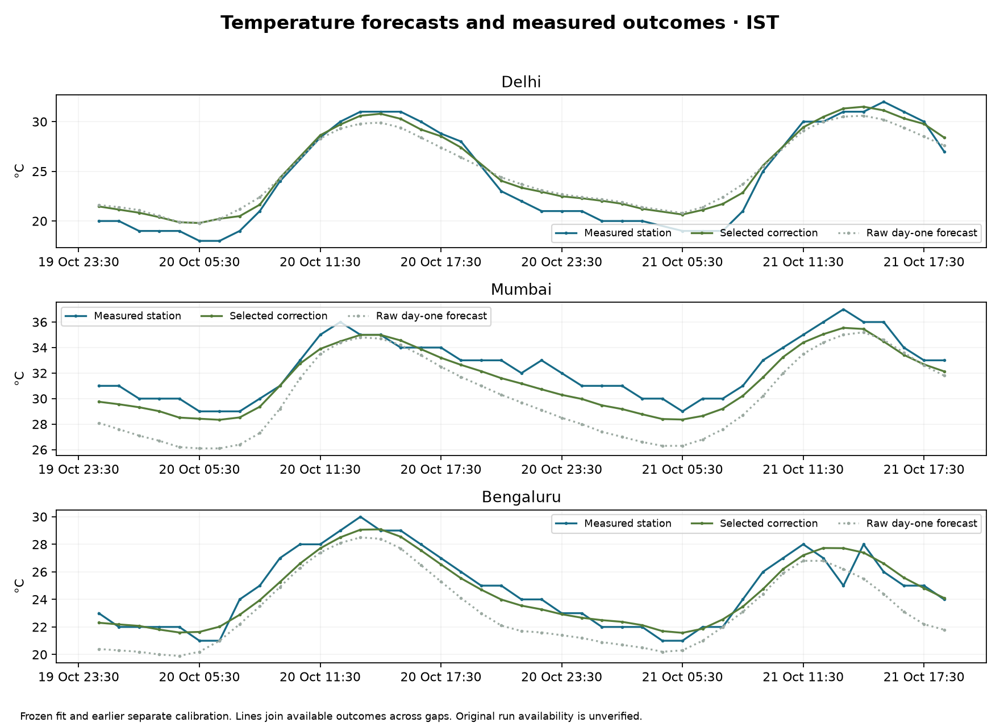

LATEST MODEL FORECAST ECMWF IFS
—°C
Loading the weather
Hourly forecast · India Standard Time
HUMIDITY—
WIND—
RAIN / HOUR—
Model estimates · not direct station measurements
Explore the forecast. Understand the model.
See the evidence behind every correction.
Hourly forecast · India Standard Time
Finding the next-day target…
Loading the hourly forecast…
Speed, direction and pressure patterns are inputs to our local correction.
INCLUDEDProvider rainfall, cloud cover and solar radiation help describe the forecast state.
INCLUDEDDaily cycles, seasons, forecast lags, changes and rolling standard deviations.
INCLUDEDDedicated climate-index and advisory feeds are not connected to our correction.
NOT CONNECTEDWe trained local corrections on measured station outcomes and archived ECMWF forecasts. Model selection happens on earlier periods; the small held-out week is reported without tuning to it.


Training uses 2024–2026 history. The final fit ends before 5 October IST; separate calibration labels end before 19 October. Test origins begin 19 October. The archive ends 21 October, so this is a partial test, with serially dependent outcomes and incomplete station coverage. Original forecast dissemination times and later archive revisions are not independently verified.
No claim of nationwide accuracy, guaranteed interval coverage or readiness for weather warnings is made.
Open-Meteo supplies ECMWF weather-model forecasts: temperature, humidity, wind, pressure, rain, clouds and radiation.
Our Python models learn station-level temperature errors from NOAA GHCNh measurements, paired with provider-aligned day-one forecasts.
Earlier validation compares no correction, bias adjustment, linear regression and boosted trees. A correction must improve validation MAE by at least 3% to be selected.
The correction applies only to the separate nominal 24-hour panel. Other dates, rain and wind use upstream forecasts. Dedicated ENSO and cyclone feeds are not integrated.
The hourly chart uses the latest available forecast. Our research panel uses the provider's aligned day-one stream, matching its training data. Different model runs and lead times can produce different values. “Retrieved” is our fetch time, not the model's initialization time.
The displayed range is estimated from absolute errors on an earlier, separate calibration period. It aims at 90% coverage under appropriate assumptions, but weather drift and dependence can break those assumptions. See observed held-out coverage in Validation.
Delhi Safdarjung, Mumbai airport and Bengaluru HAL airport. These are station environments, not forecasts validated for every neighbourhood or all of India.